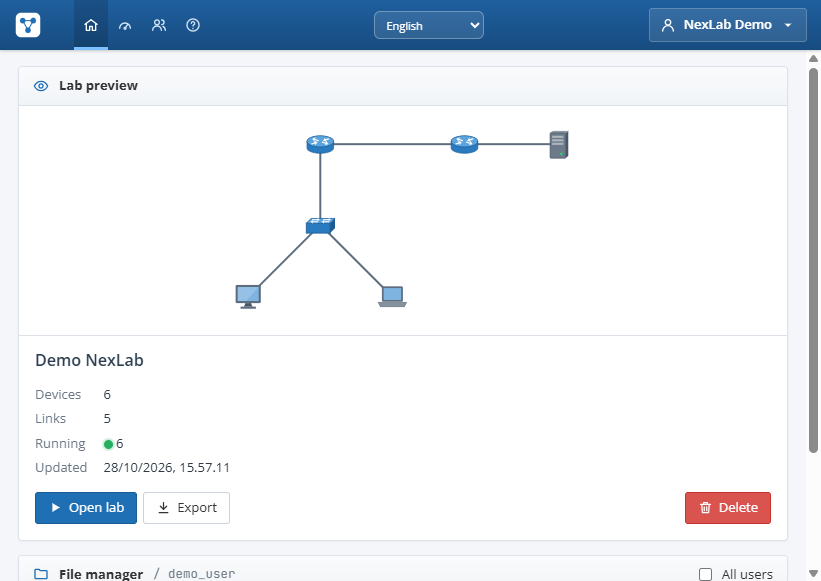
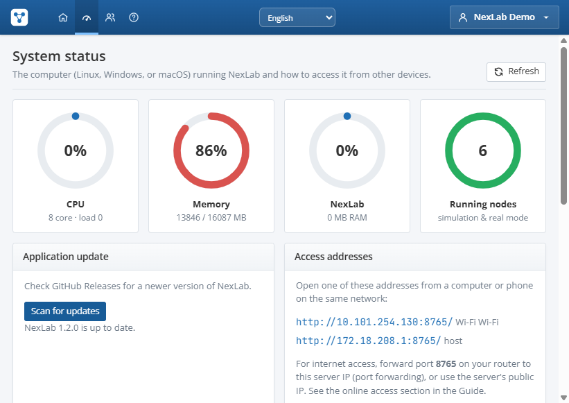

Dokumentasi NexLab
Panduan lengkap memasang NexLab, membangun topologi jaringan, mengonfigurasi perangkat lewat CLI, menjalankan simulasi, sampai menghubungkan lab ke perangkat sungguhan.
Pengenalan
NexLab adalah lab jaringan pribadi yang berjalan di komputer Anda sendiri dan dibuka lewat browser. Gaya kerjanya memadukan editor topologi ala Packet Tracer dengan kemampuan node real ala PNETLab.
NexLab terdiri dari dua bagian yang terpasang sekaligus oleh installer:
- Server NexLab — aplikasi yang berjalan di komputer Anda. Server menyimpan akun dan lab, menjalankan mesin simulasi jaringan, serta melayani console perangkat.
- Antarmuka web — dibuka di browser (Chrome, Edge, Firefox, Safari). Bisa dari komputer yang sama, atau dari laptop/HP lain di jaringan yang sama.
Dua jenis node
| Jenis | Contoh | Sifat |
|---|---|---|
| Simulasi | Router, switch, firewall, PC, server, AP, OLT | Emulasi CLI ala Cisco IOS. Sangat ringan (hampir 0 MB RAM per node), tanpa hak administrator, berjalan di semua OS. |
| Real | QEMU VM, Linux Host, Cloud, Perangkat Fisik | Menjalankan sistem/paket sungguhan atau terhubung ke jaringan fisik. Beberapa fitur butuh Linux dengan hak root. |
Catatan jujur: node simulasi adalah emulasi CLI, bukan IOS asli, dan tidak mengirim paket ke jaringan fisik. Untuk lalu lintas nyata, gunakan node QEMU/Linux Host yang dikabelkan ke node Cloud.

Kebutuhan sistem
| Komponen | Minimum | Disarankan |
|---|---|---|
| Sistem operasi | Windows 10/11 x64, macOS 12+ (Intel/Apple Silicon), Linux x86_64 berbasis glibc | Versi terbaru dengan pembaruan keamanan |
| RAM | 2 GB (lab simulasi, ±60 MB untuk NexLab) | 8 GB+ bila menjalankan QEMU VM |
| Penyimpanan | 300 MB untuk aplikasi | Tambahan sesuai ukuran image QEMU |
| Browser | Chrome/Edge/Firefox/Safari versi terkini | Layar ≥ 1280 px untuk editor |
Python atau dependensi lain tidak perlu dipasang — semuanya sudah termasuk di dalam paket aplikasi.
Untuk fitur real (opsional): Linux dengan hak root dan iproute2; untuk VM tambahkan qemu-system-x86 dan qemu-utils, sebaiknya CPU dengan dukungan KVM. Di Windows/macOS, QEMU dapat dipasang terpisah dan dipakai dengan jaringan NAT.
Download & instalasi
Unduh installer sesuai sistem operasi dari bagian Download di website NexLab. Installer berukuran kecil: saat dijalankan, ia mengambil paket aplikasi resmi, memverifikasi checksum SHA-256, memasang NexLab, membuat shortcut, lalu membukanya.
NexLab-Setup-Windows.cmdNexLab-Setup-macOS.commandNexLab-Setup-Linux.shWindows
- Klik Windows 10 / 11 di halaman download untuk mengunduh
NexLab-Setup-Windows.cmd. - Buka folder Downloads dan klik ganda file tersebut. Jika muncul Windows protected your PC (SmartScreen), pilih More info → Run anyway.
- Tunggu jendela installer selesai mengunduh dan memverifikasi paket. NexLab dipasang di
%LOCALAPPDATA%\Programs\NexLab. - Shortcut NexLab dibuat di Desktop dan Start Menu, lalu aplikasi terbuka otomatis di browser.
- Jika Windows Firewall bertanya, pilih Allow access agar NexLab bisa dibuka dari perangkat lain di jaringan.
macOS
- Klik macOS di halaman download untuk mengunduh
NexLab-Setup-macOS.command. - Buka aplikasi Terminal, lalu jalankan (sesuaikan bila folder unduhan berbeda):
bash ~/Downloads/NexLab-Setup-macOS.command - Installer memilih paket sesuai prosesor (Apple Silicon atau Intel), memasang
NexLab.appdi~/Applications, membuat alias di Desktop, lalu membukanya. - Aplikasi belum ditandatangani Apple. Jika muncul peringatan, klik kanan
NexLab.app→ Open → Open, atau izinkan lewat System Settings → Privacy & Security → Open Anyway.
Linux
- Klik Linux di halaman download untuk mengunduh
NexLab-Setup-Linux.sh. - Pastikan alat dasar tersedia (biasanya sudah ada). Contoh untuk Ubuntu/Debian:
sudo apt install curl tar coreutils procps - Jalankan installer sebagai pengguna biasa (tanpa
sudo):bash ~/Downloads/NexLab-Setup-Linux.sh - NexLab dipasang di
~/.local/opt/nexlab, perintahnexlabdibuat di~/.local/bin, serta pintasan di menu aplikasi dan Desktop.
Memperbarui & menghapus
- Memperbarui: tutup NexLab, unduh installer terbaru dari website, lalu jalankan lagi. Di Windows, admin juga dapat memperbarui langsung dari Status sistem. Data lab dan akun tidak ikut terhapus.
- Menghapus aplikasi: hapus folder instalasi (
%LOCALAPPDATA%\Programs\NexLab,~/Applications/NexLab.app, atau~/.local/opt/nexlab) beserta shortcut-nya. Hapus juga folder data bila ingin menghapus seluruh lab.
Menjalankan NexLab
Buka NexLab dari shortcut Desktop/Start Menu (Windows), NexLab.app (macOS), atau menu aplikasi / perintah nexlab (Linux). Server berjalan, animasi pembuka diputar, lalu browser membuka dashboard.
- Alamat lokal:
http://localhost:8080/ - Alamat untuk perangkat lain di jaringan yang sama tampil di jendela server dan di halaman Status sistem, misalnya
http://192.168.1.20:8080/. - Menutup jendela server (atau Ctrl+C) menghentikan NexLab. Lab tersimpan otomatis.
Opsi baris perintah
Aplikasi menerima opsi berikut bila dijalankan dari terminal:
| Opsi | Fungsi |
|---|---|
--port 8090 | Ganti port bila 8080 sudah dipakai aplikasi lain. |
--host 127.0.0.1 | Hanya bisa dibuka dari komputer ini (default 0.0.0.0 = semua jaringan). |
--data <folder> | Lokasi database, image, dan file runtime. |
--cert file.pem --key key.pem | Aktifkan HTTPS dengan sertifikat sendiri. |
--open | Buka browser otomatis setelah server siap (dipakai shortcut). |
Contoh di Linux: nexlab --port 8090. Variabel lingkungan NEXLAB_PORT dan NEXLAB_DATA juga dikenali.
Akun & lab pertama
- Di halaman login, pilih tab Daftar. Akun pertama yang dibuat otomatis menjadi admin.
- Username 3–32 karakter (huruf kecil, angka,
. _ -), password minimal 6 karakter. Centang Ingat saya 30 hari agar tidak perlu login ulang. - Di halaman Main, klik Lab baru, beri nama, lalu pilih template.
- Lab terbuka di editor. Semua perubahan disimpan otomatis.
Template lab bawaan
| Template | Isi |
|---|---|
| Lab kosong | Kanvas kosong untuk membangun dari nol. |
| Latihan LAN dasar | Router, switch, dan PC yang sudah dikabelkan tetapi belum dikonfigurasi. |
| Latihan OSPF 3 site | Tiga router antar site untuk latihan routing dinamis. |
| Demo lengkap terkonfigurasi | Router-on-a-stick VLAN 10/20, OSPF R1–R2, DHCP pool GUEST, DNS di server, ACL 110, SSH ke R1, telnet ke R2. |
| Rumah FTTH + WiFi | Server ISP – router ISP – OLT – ODP 1:8 – ONT – router rumah – AP WiFi dengan laptop, HP, PC, CCTV, dan script cek-internet. |
Kredensial lab demo: SSH ke R1 admin / admin123, telnet ke R2 password cisco, enable secret R1 cisco. WiFi template FTTH: SSID Rumah-WiFi, password rumah12345. Ini hanya data latihan di dalam lab.

Ekspor & impor lab
Dari menu lab, pilih Ekspor untuk mengunduh file .nexlab.json (topologi, konfigurasi, workbook, peta 3D). Gunakan Impor di halaman Main untuk memuatnya di komputer lain. File yang sama juga bisa dibagikan di Marketplace website.
Editor topologi
Menambah perangkat
- Klik kanan kanvas → Node…, atau sidebar kiri → Tambah objek → Node. Pilih jenis, jumlah, dan nama.
- Seret node untuk memindahkan; roda mouse untuk zoom; seret area kosong untuk menggeser kanvas.
Memasang kabel
- Tekan C (atau menu Kabel / koneksi).
- Klik perangkat pertama dan pilih interface, lalu klik perangkat kedua dan pilih interface tujuan.
- Lampu link: hijau = up, kuning = sedang naik/tidak sinkron, merah = down/mati. Kabel putus-putus kuning menandakan sambungan dokumentasi (simulasi ↔ real).
Menyalakan & console
- Pilih node lalu Start di panel inspektor, atau klik kanan kanvas → Nyalakan semua node.
- Klik ganda node untuk membuka console di jendela mengambang. Bisa membuka banyak console sekaligus atau di tab baru.
- Wipe mengembalikan node ke kondisi awal (menghapus running-config dan disk overlay VM).
Panel inspektor
Menampilkan detail node terpilih: power, konfigurasi IP PC (static/DHCP), layanan server (DHCP, DNS, HTTP), uji ping cepat dengan animasi paket, serta tampilan running-config dan startup-config.
Objek gambar
Tambahkan catatan, teks bebas, persegi, elips, garis, dan gambar latar. Kabel dapat diberi warna, gaya, dan ketebalan; ikon node dapat diubah ukurannya dan posisi labelnya.
Pintasan keyboard
| Tombol | Aksi |
|---|---|
| C | Mode kabel |
| N | Teks bebas |
| I | Alat Inspect (tabel routing, ARP, MAC, VLAN, ACL) |
| D | Alat Delete |
| P | Tambah PDU sederhana |
| Shift+S / Shift+R | Mode Simulasi / Realtime |
| Spasi | Putar/jeda simulasi |
| Ctrl+Z | Undo |
| Del / Backspace | Hapus objek terpilih |
| + / - / F | Zoom in / zoom out / pas layar |
| Esc | Batalkan alat aktif |
| F1 | Buka/tutup panel Panduan |
| ? | Daftar semua pintasan |
Katalog perangkat
| Perangkat | Jenis | Kemampuan |
|---|---|---|
| Router (ISR4331) | Simulasi | Interface GigabitEthernet0/0–0/3 & sub-interface 802.1Q, static route, OSPF, RIP, DHCP server & relay, ACL standard/extended, loopback, telnet/SSH |
| Firewall | Simulasi | Router IOS dengan ACL masuk/keluar per interface |
| Switch L2 (2960) | Simulasi | VLAN, access/trunk, native & allowed VLAN, interface range, SVI manajemen, MAC table, CDP |
| Switch L3 (3650) | Simulasi | Semua fitur L2 + ip routing, SVI inter-VLAN, no switchport, OSPF/RIP |
| PC, Laptop, Server | Simulasi | Command Prompt: ipconfig, ping, tracert, nslookup, arp, telnet, ssh, curl; server punya DHCP, DNS, HTTP |
| Printer, IP Phone, Kamera CCTV | Simulasi | End device dengan Command Prompt |
| Smartphone, Tablet, IoT | Simulasi | Klien WiFi (port Wireless0), perintah wifi <ssid> <password> |
| Access Point | Pasif | SSID, WPA2/WPA3/Open, channel; klien hanya tersambung bila SSID & password cocok |
| OLT | Simulasi | CLI switch dengan port GPON |
| ODP / Splitter, ONT | Pasif | Splitter 1:2–1:16; ONT sebagai bridge |
| Hub, Cloud | Pasif / Real | Satu segmen bersama; Cloud dapat di-bridge ke NIC fisik |
| QEMU VM | Real | Menjalankan image asli (vIOS, CSR1000v, vEOS, MikroTik CHR, VyOS, pfSense, Linux…) |
| Linux Host | Real | Network namespace dengan stack TCP/IP asli dan shell bash (Linux, root) |
| Perangkat Fisik | Remote | Console Telnet/SSH dari browser ke perangkat sungguhan di LAN |
Perangkat pasif (AP, ODP, ONT, Hub, Cloud) tidak memiliki console; pengaturannya ada di panel inspektor.
Console & CLI
Console router/switch meniru Cisco IOS. Fitur bantu yang tersedia:
- Singkatan perintah:
sh ip int br,conf t,int g0/0. - ? untuk bantuan konteks, Tab untuk melengkapi, panah atas/bawah untuk riwayat.
dodi mode konfigurasi, filter| include,| exclude,| begin,| section.- Password console/enable/vty,
write memory,copy run start,reload,erase startup-config.
Mode CLI
| Prompt | Mode | Masuk dengan |
|---|---|---|
R1> | User EXEC | Saat console dibuka |
R1# | Privileged EXEC | enable |
R1(config)# | Global config | configure terminal |
R1(config-if)# | Interface | interface GigabitEthernet0/0 |
R1(config-router)# | Routing | router ospf 1 |
Perintah show yang sering dipakai
show ip interface brief
show running-config
show ip route
show vlan brief
show interfaces trunk
show mac address-table
show cdp neighbors
show ip ospf neighbor
show access-lists
show ip dhcp bindingKonfigurasi dasar router
enable
configure terminal
hostname R1
enable secret cisco
interface GigabitEthernet0/0
ip address 192.168.1.1 255.255.255.0
no shutdown
exit
ip route 0.0.0.0 0.0.0.0 10.0.0.2
end
write memoryKonfigurasi yang belum disimpan dengan write memory hilang saat node dimatikan atau di-reload.
PC, server & script
Mengatur IP
Pilih PC → panel inspektor → isi IP, subnet mask, gateway, DNS, atau pilih DHCP. Bisa juga lewat Command Prompt:
ipconfig
ipconfig /renew
ping 192.168.10.1
tracert 8.8.8.8
nslookup www.lab.local
arp -aLayanan server
- DHCP — alamat awal, jumlah maksimum, gateway, DNS.
- DNS — daftar record nama → IP.
- HTTP — isi
index.htmlsendiri; dari PC jalankancurl http://192.168.10.10/ataubrowser www.lab.local.
Script otomatis
Setiap PC/server punya panel Script. Jalankan dari panel, atau dari console dengan script / run <nama>.
set gw 192.168.10.1
echo Menguji gateway ${gw}
repeat 3
ping ${gw}
sleep 1
end
if ping 8.8.8.8
echo Internet OK
else
echo Internet putus
endPerintah yang didukung: echo, set, ${var}, sleep, repeat … end, if ping … else … end, dan semua perintah Command Prompt. Script dihentikan otomatis setelah 120 detik.
Tutorial: VLAN, router-on-a-stick & DHCP
Topologi: R1 (G0/0) — SW1 (G0/1) trunk; PC1 di Fa0/1 (VLAN 10), PC2 di Fa0/2 (VLAN 20). Buat dari template Latihan LAN dasar atau tambahkan sendiri, lalu nyalakan semua node.
1. Switch: VLAN dan trunk
enable
configure terminal
vlan 10
name STAFF
vlan 20
name GUEST
interface FastEthernet0/1
switchport mode access
switchport access vlan 10
interface FastEthernet0/2
switchport mode access
switchport access vlan 20
interface GigabitEthernet0/1
switchport mode trunk
switchport trunk allowed vlan 10,20
end
write memory2. Router: sub-interface 802.1Q
enable
configure terminal
interface GigabitEthernet0/0
no shutdown
interface GigabitEthernet0/0.10
encapsulation dot1Q 10
ip address 192.168.10.1 255.255.255.0
interface GigabitEthernet0/0.20
encapsulation dot1Q 20
ip address 192.168.20.1 255.255.255.0
end3. Router: DHCP untuk dua VLAN
configure terminal
ip dhcp excluded-address 192.168.10.1 192.168.10.9
ip dhcp excluded-address 192.168.20.1 192.168.20.9
ip dhcp pool STAFF
network 192.168.10.0 255.255.255.0
default-router 192.168.10.1
dns-server 192.168.10.10
ip dhcp pool GUEST
network 192.168.20.0 255.255.255.0
default-router 192.168.20.1
end
write memory4. Uji
- Set PC1 dan PC2 ke DHCP di panel inspektor, atau jalankan
ipconfig /renew. - Dari PC1:
ping 192.168.20.x(IP PC2). Ping pertama bisa hilang karena ARP — itu normal. - Di R1:
show ip dhcp binding; di SW1:show interfaces trunk.
Jika DHCP server berada di subnet lain, tambahkan ip helper-address <IP-server> pada interface gateway VLAN.
Tutorial: routing statis & OSPF
Routing statis
ip route 192.168.30.0 255.255.255.0 10.0.12.2
ip route 0.0.0.0 0.0.0.0 10.0.12.2OSPF area 0
Jalankan di setiap router, sesuaikan jaringan yang terhubung:
router ospf 1
router-id 1.1.1.1
network 192.168.10.0 0.0.0.255 area 0
network 10.0.12.0 0.0.0.3 area 0
passive-interface GigabitEthernet0/0
endVerifikasi dengan show ip ospf neighbor dan show ip route (route OSPF ditandai O). RIP juga tersedia: router rip, version 2, network 10.0.0.0.
Kalkulator subnet/wildcard tersedia di panel Panduan (F1).
ACL, SSH & NAT
ACL extended
Contoh: blokir SSH dari VLAN GUEST ke server farm, izinkan lainnya.
access-list 110 deny tcp 192.168.20.0 0.0.0.255 192.168.50.0 0.0.0.255 eq 22
access-list 110 permit ip any any
interface GigabitEthernet0/0.20
ip access-group 110 inPing memperhitungkan ACL di kedua arah. Cek hit counter dengan show access-lists.
SSH ke router
hostname R1
ip domain-name lab.local
crypto key generate rsa
username admin secret admin123
line vty 0 4
login local
transport input sshDari PC: ssh -l admin 192.168.10.1. Untuk telnet: line vty 0 4 → password cisco → login.
NAT overload (PAT)
Router simulasi menerima dan menyimpan perintah NAT di running-config, tetapi translasi alamat belum disimulasikan. Untuk menguji NAT yang benar-benar bekerja, gunakan router QEMU (vIOS/CSR1000v) atau perangkat asli.
access-list 1 permit 192.168.10.0 0.0.0.255
interface GigabitEthernet0/0.10
ip nat inside
interface GigabitEthernet0/1
ip nat outside
ip nat inside source list 1 interface GigabitEthernet0/1 overloadWi-Fi & FTTH
Access Point dan klien
- Kabelkan AP ke switch, lalu atur SSID, keamanan (WPA2/WPA3/Open), password, dan channel di panel inspektor AP.
- Pada laptop/HP/tablet, isi SSID dan password di inspektor, atau ketik di console:
wifi Kantor-WiFi rahasia123. - Klien hanya tersambung jika SSID dan password cocok; setelah itu IP didapat dari DHCP jaringan di belakang AP.
Rantai FTTH (GPON)
Susunan umum: OLT → ODP/splitter (1:2 sampai 1:16) → ONT di rumah pelanggan → router rumah. OLT memakai CLI switch dengan port GPON; ODP dan ONT bersifat pasif. Template Rumah FTTH + WiFi memberi contoh lengkap — buka PC-Kerja lalu jalankan run cek-internet.
Kalkulator power budget fiber serta link budget wireless + zona Fresnel tersedia di panel Panduan.
Mode simulasi & PDU
Seperti Packet Tracer, editor punya dua mode: Realtime (Shift+R) dan Simulasi (Shift+S).
- PDU sederhana (P): klik perangkat sumber lalu tujuan untuk mengirim ICMP.
- PDU kompleks: pilih protokol ICMP/TCP/UDP dan port tujuan.
- Event list menampilkan perjalanan paket langkah demi langkah dengan animasi amplop; klik event untuk melihat info per layer OSI.
- Filter protokol, putar/jeda (Spasi), dan simpan beberapa skenario PDU.
Alat Inspect (I) menampilkan tabel routing, ARP, MAC, VLAN, dan ACL dari perangkat yang diklik.
Workbook & penilaian
Setiap lab dapat memiliki workbook: instruksi tugas (markdown) dan daftar pemeriksaan otomatis. Tekan Cek untuk mendapat skor 0–100.
| Jenis cek | Lolos bila |
|---|---|
| Ping | Node sumber berhasil ping ke node/IP tujuan |
| Config | Running-config node mengandung teks tertentu |
| Running | Node dalam keadaan menyala |
| Link | Ada kabel antara dua node |
Fitur pendukung
- Timer lab untuk latihan atau ujian berbatas waktu (maks. 24 jam).
- Config set (maks. 12 per lab): simpan dan muat startup-config semua node, misalnya "awal" dan "kunci jawaban".
- Ekspor semua config ke satu file
.txt, dan impor perintah ke node. - Admin dapat melihat lab yang sedang berjalan dari semua pengguna, lalu bergabung atau menghentikannya.
Peta 3D & material
Tab Peta 3D di editor untuk merencanakan instalasi lapangan.
- Bangunan bertingkat (rumah 1–2 lantai, kantor, gedung) dengan tangga, riser kabel, dan filter per lantai.
- Perangkat dalam ruangan (rack, router, switch, patch panel, AP plafon, ONT, PC, CCTV, outlet) dan luar ruangan (OLT, ODC, tiang, tower, ODP, joint closure, handhole), antena dish/sektor/omni.
- Tarik kabel otomatis: naik ke cable tray, mengikuti sumbu bangunan, pindah lantai lewat riser; fiber udara melewati tiang dengan lendutan, atau tanam dalam pipa.
- Jenis kabel: UTP Cat6, fiber SM, drop cable, coaxial, listrik, link wireless.
| Tab | Isi |
|---|---|
| Kabel | Tabel kabel dan label; unduh CSV |
| Material | BOM: perangkat, meter kabel + slack, RJ45, konektor SC, tray, klem; unduh CSV |
| Budget | Daya terima tiap ONT dari OLT; RSSI, LOS, dan Fresnel tiap link PtP |
| Standar | Aturan pemasangan yang disarankan |
Objek 3D dapat dihubungkan ke node topologi — klik ganda membuka console node tersebut.
Integrasi Claude AI
NexLab dapat membangun lab dari permintaan teks memakai Claude Code CLI yang terpasang di komputer server. NexLab tidak menyimpan API key; pemakaian dihitung ke akun yang login di CLI tersebut.
- Buat dengan Claude (halaman Main) atau menu Claude AI di editor: tulis permintaan seperti "3 VLAN dengan router-on-a-stick, DHCP dan ACL". Claude membuat perangkat, kabel, konfigurasi, IP, layanan server, dan workbook.
- Mode Ubah / tambah ke lab ini atau Ganti seluruh lab.
- Tanya Claude: tanya jawab tentang lab yang terbuka, misalnya "kenapa ping PC1 ke PC3 gagal?".
Status CLI, versi, dan akun tampil di Status sistem; admin dapat memulai login CLI dari sana. Secara default fitur ini hanya untuk admin — admin bisa mengizinkan pengguna lain.
Perangkat real & QEMU
Menyiapkan image QEMU
Salin image milik Anda ke folder images/qemu di dalam folder data. Bisa satu folder per image, atau file langsung:
images/qemu/vios/vios.qcow2
images/qemu/mikrotik-7.15/chr.img
images/qemu/linux-alpine/alpine.iso
images/qemu/vyos.qcow2Tambahkan node QEMU VM, pilih image, atur RAM/CPU/jumlah NIC, lalu Start. Setiap node memakai disk overlay sendiri sehingga image asli tidak berubah; tombol Wipe menghapus overlay.
Image vendor (misalnya Cisco) tidak disertakan karena berlisensi. Gunakan image yang Anda miliki secara sah.
Linux Host & bridge (khusus Linux, root)
Node Linux Host dan bridge Layer 2 memerlukan hak root. Jalankan NexLab hasil instalasi dengan:
sudo ~/.local/opt/nexlab/NexLab --open --data ~/.local/share/nexlabSetiap kabel antar node real dibuat sebagai Linux bridge (STP/CDP/LLDP diteruskan).
Node Cloud ke jaringan fisik
Paling aman memakai NIC kedua (USB LAN pun bisa) yang dicolok ke switch/router fisik. Di editor, tambahkan node Cloud, pilih NIC tersebut, lalu kabelkan node QEMU VM atau Linux Host ke Cloud.
Jika hanya punya satu NIC, jadikan NIC itu bridge. Lakukan dari console lokal (bukan SSH), karena koneksi sempat terputus:
sudo ip link add pnet0 type bridge
sudo ip link set eth0 master pnet0
sudo ip link set pnet0 up
sudo dhclient pnet0Ganti eth0 dengan nama NIC Anda (ip link). Lalu pilih pnet0 sebagai target node Cloud.
Di Windows dan macOS, Cloud memakai NAT QEMU: VM bisa mengakses internet keluar, tetapi bukan bridge Layer 2 dan tidak meneruskan broadcast CDP/LLDP.
Mengelola perangkat fisik
Node Perangkat Fisik membuka console Telnet/SSH dari browser ke switch/router sungguhan, melalui komputer NexLab.
- Pastikan komputer NexLab dapat menjangkau IP manajemen perangkat dan SSH/Telnet aktif di perangkat.
- Tambahkan node Perangkat Fisik, isi IP manajemen, pilih SSH atau Telnet, dan port bila tidak standar.
- Tekan Uji ping dari server. Banyak perangkat memblokir ICMP, jadi ping gagal belum tentu SSH tidak bisa.
- Buka Console dan masukkan kredensial perangkat.
Untuk kabel console serial, gunakan terminal server dan isi IP/port terminal server sebagai tujuan Telnet.
PC/router simulasi tidak mengirim paket ke jaringan fisik. Ping dari PC simulasi ke IP Windows atau gateway rumah tidak akan lewat Wi-Fi komputer. Untuk menguji koneksi nyata, gunakan Status sistem → Uji ping jaringan atau tombol uji ping di node Perangkat Fisik.
Status sistem & update
Halaman Status sistem menampilkan OS, versi NexLab, uptime, CPU, RAM, jumlah node menyala, alamat akses, kemampuan real (QEMU, KVM, root), serta status Claude CLI.
- Jaringan Windows: daftar NIC, IPv4/gateway, dan neighbor dari cache ARP. IP neighbor dapat dipilih untuk node Perangkat Fisik. NexLab tidak memindai subnet.
- Uji ping jaringan: ping satu IP LAN atau publik (misalnya
8.8.8.8) dari komputer server.

Memperbarui aplikasi
- Klik Scan for updates untuk membandingkan versi Anda dengan rilis stabil terbaru.
- Windows: admin dapat memilih Pasang update sekarang. NexLab mengunduh paket, memverifikasi SHA-256, menutup diri, memperbarui, lalu membuka kembali.
- macOS/Linux: unduh installer terbaru dari halaman download lalu jalankan seperti saat instalasi.
Database, akun, lab, dan image selalu dipertahankan. Jika update Windows gagal, log ada di %LOCALAPPDATA%\NexLab\logs\update.log.
Manajemen pengguna
Menu Manajemen user (khusus admin):
- Ubah peran admin/user, nonaktifkan akun, reset password, atau hapus akun.
- Tutup pendaftaran setelah semua akun dibuat — sangat disarankan bila NexLab bisa diakses dari internet.
- Ubah judul aplikasi dan izinkan/larang pengguna non-admin memakai Claude.
Keamanan: password di-hash PBKDF2, sesi cookie HttpOnly, pembatasan percobaan login (8 kali gagal → jeda 5 menit), dan proteksi CSRF. Ganti password sendiri dari menu akun di pojok kanan atas.
Akses dari jaringan & internet
Dari perangkat lain di LAN
Buka alamat yang tampil di Status sistem, misalnya http://192.168.1.20:8080/. Jika tidak bisa:
- Windows: izinkan NexLab di Windows Defender Firewall (Allow an app through firewall) untuk jaringan Private.
- Linux:
sudo ufw allow 8080/tcp - macOS: izinkan koneksi masuk saat diminta, atau di System Settings → Network → Firewall.
Dari internet
- Port forwarding di router: TCP 8080 → IP lokal komputer NexLab.
- Sangat disarankan memakai HTTPS: jalankan dengan
--certdan--key, atau taruh di belakang reverse proxy. - Tutup pendaftaran setelah akun Anda dibuat.
Contoh Caddy (HTTPS otomatis; WebSocket console di path /ws/ ikut diteruskan):
lab.domainanda.com {
reverse_proxy 127.0.0.1:8080
}Data & cadangan
Database akun dan lab, image QEMU, serta file runtime disimpan terpisah dari aplikasi sehingga tidak terhapus saat update:
| OS | Folder data |
|---|---|
| Windows | %LOCALAPPDATA%\NexLab\data |
| macOS | ~/Library/Application Support/NexLab/data |
| Linux | ~/.local/share/nexlab (atau $XDG_DATA_HOME/nexlab) |
Isi penting: nexlab.db (akun & lab), images/ (image QEMU), runtime/ (disk overlay, dapat dihapus).
Cadangan: tutup NexLab lalu salin nexlab.db. Untuk satu lab, cukup Ekspor ke .nexlab.json.
Pemecahan masalah
Installer gagal: "checksum tidak cocok" atau unduhan terputus
Koneksi internet terputus atau paket rusak saat diunduh. Jalankan ulang installer. Jika memakai proxy kantor, coba jaringan lain. Installer sengaja berhenti bila checksum tidak cocok demi keamanan.
Windows: shortcut tidak membuka apa-apa / jendela langsung tertutup
Biasanya port 8080 sudah dipakai aplikasi lain. Jalankan NexLab.exe --port 8090 --open dari folder instalasi, atau tutup aplikasi yang memakai port 8080. Antivirus kadang juga memblokir aplikasi yang belum ditandatangani — tambahkan pengecualian untuk folder NexLab.
macOS: "NexLab.app can't be opened because it is from an unidentified developer"
Klik kanan NexLab.app → Open → Open, atau buka System Settings → Privacy & Security lalu klik Open Anyway.
Browser menampilkan halaman tidak ditemukan / tidak bisa terhubung
Pastikan jendela server NexLab masih berjalan. Gunakan alamat http:// (bukan https://) kecuali HTTPS sudah diaktifkan. Dari perangkat lain, periksa firewall (lihat Akses dari jaringan).
Ping antar PC gagal
- Pastikan semua node dalam jalur sudah menyala dan lampu link hijau.
- Ping pertama sering hilang karena ARP — ulangi sekali lagi.
- Periksa IP, mask, dan gateway PC (
ipconfig); interface router harusno shutdown. - Periksa VLAN akses dan trunk (
show vlan brief,show interfaces trunk). - Routing harus ada di kedua arah (
show ip routedi tiap router), dan tidak ada ACL yang memblokir. - Gunakan mode Simulasi untuk melihat di hop mana paket berhenti, atau tanyakan ke Claude.
PC tidak mendapat IP dari DHCP
Periksa pool DHCP di router/server (show ip dhcp binding), alamat yang di-excluded, dan bahwa PC berada di VLAN yang sama dengan gateway pool. Jika server DHCP di subnet lain, tambahkan ip helper-address. Setelah memperbaiki, jalankan ipconfig /renew.
Konfigurasi hilang setelah node dimatikan
Simpan dengan write memory atau copy running-config startup-config sebelum mematikan node. Gunakan Config set untuk menyimpan beberapa versi konfigurasi.
Console menampilkan "Device is powered off"
Node belum dinyalakan. Klik Start di panel inspektor, lalu tekan Enter di console.
QEMU VM gagal start
- Pastikan QEMU terpasang dan status QEMU siap di Status sistem.
- Pastikan image ada di
images/qemudalam folder data dan dipilih di node. - Kurangi RAM node bila memori host tidak cukup. Tanpa KVM, VM berjalan lambat.
VM tidak bisa menjangkau jaringan fisik
Bridge Layer 2 hanya tersedia di Linux dengan root. Periksa nama NIC/bridge yang dipilih di node Cloud, dan pastikan firewall host tidak memblokir. Di Windows/macOS, Cloud memakai NAT sehingga perangkat fisik tidak dapat memulai koneksi ke VM.
Fitur Claude tidak tersedia
Pastikan Claude Code CLI terpasang di komputer server dan sudah login (cek di Status sistem). Pengguna non-admin hanya bisa memakai fitur ini bila admin mengizinkannya.
Lupa password
Minta admin melakukan reset password di Manajemen user. Jika admin satu-satunya yang lupa, admin lain harus mereset; tanpa admin lain, akun tidak dapat dipulihkan dari aplikasi.
FAQ
Apakah NexLab gratis?
Ya. Dukungan lewat donasi bersifat sukarela.
Apakah butuh internet?
Hanya untuk instalasi, pemeriksaan update, dan fitur Claude. Lab simulasi berjalan sepenuhnya offline.
Apakah CLI-nya IOS asli?
Bukan. Node simulasi adalah emulasi perintah yang umum dipakai untuk belajar. Untuk IOS asli, gunakan node QEMU dengan image vIOS/CSR1000v milik Anda.
Berapa node yang bisa dijalankan?
Node simulasi sangat ringan — puluhan hingga ratusan node tetap lancar di laptop biasa. Batas sebenarnya ditentukan node QEMU yang memakai RAM sesuai pengaturannya.
Bisakah beberapa orang memakai satu server?
Bisa. Setiap pengguna punya lab sendiri; admin dapat melihat dan menghentikan lab yang berjalan. Cocok untuk kelas atau tim.
Bisakah file lab dipakai di Packet Tracer?
Tidak. Format NexLab adalah .nexlab.json. Konfigurasi perangkat dapat diekspor ke .txt dan ditempel ke perangkat lain.
Donasi & masukan
Menemukan bug atau punya ide fitur? Kirim lewat tombol Feedback di website — aplikasi email Anda terbuka dengan pesan yang sudah terisi dan langsung terkirim ke admin.
Ingin membantu pengembangan? Gunakan tombol Donasi (Saweria atau PayPal). Terima kasih!
Punya rancangan lab yang bagus? Bagikan di Marketplace sebagai file .nexlab.json.